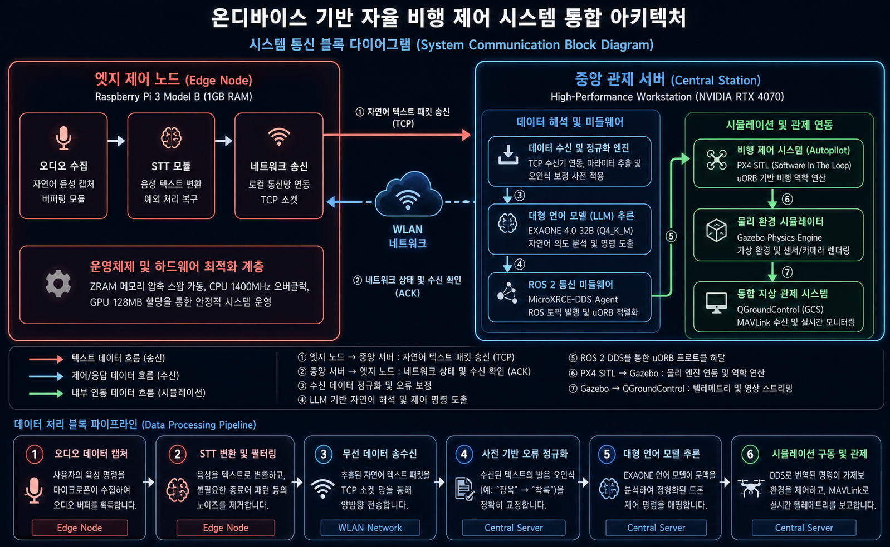
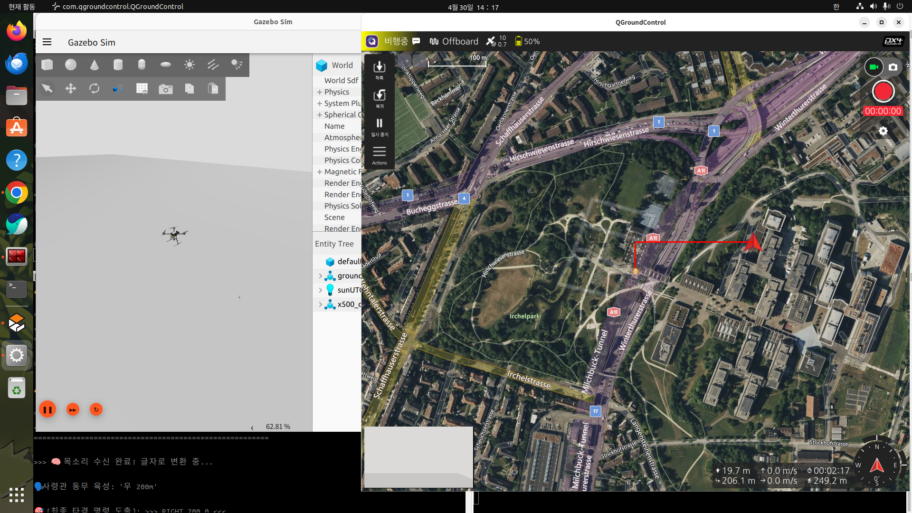

- 01. 아키텍처 진화 (프로토타입 1 → 2)
- 02. 비행 통제 시스템 통신 흐름도
- 03. EXAONE 32B 경량화 및 RAG 구축
- 04. 훈련 데이터 증강 및 파인튜닝
- 05. 3차원 비행 역학 제어 알고리즘
- 06. 통합 제어 시스템 아키텍처 도면
- 07. 분산 아키텍처 데이터 흐름 분석
- 08. 통합 관제(GCS) 실증 화면
- 09. 결론 및 프로토타입 3 로드맵
통합 연산 시 메모리 초과(OOM) 및 제어 지연 발생.
기능별 노드 분리를 통한 실시간성 확보.
제어 명령 수신 및 ROS 2 토픽 발행.
uORB 규격 메시지 수신 및 모터 기동.
비행 텔레메트리 궤적 시각화 모니터링.
ROS 2와 PX4 간의 지연 없는 초고속 명령 하달용 미들웨어 브릿지.
드론의 센서 및 궤적 상태를 관제소에 송신하는 실시간 보고 체계.
비정형 음성을 정형화된 군사 규격 제어 파라미터로 정밀 디코딩합니다.
야외 전장 노이즈를 모사한 발음 파괴 알고리즘 적용으로 강건한 데이터 증강.
12GB VRAM 한계 돌파를 위한 최적화.
지향각(Yaw)과 피치(Pitch) 역산을 통한 로컬 3D 목표 좌표(Waypoint) 동적 생성.

통신 병목을 제거한 기능별 유기적 협업 사이클입니다.

1GB RAM 환경 내에서 32B 거대 모델 기반 온디바이스 자율 비행 파이프라인 실증 성공.